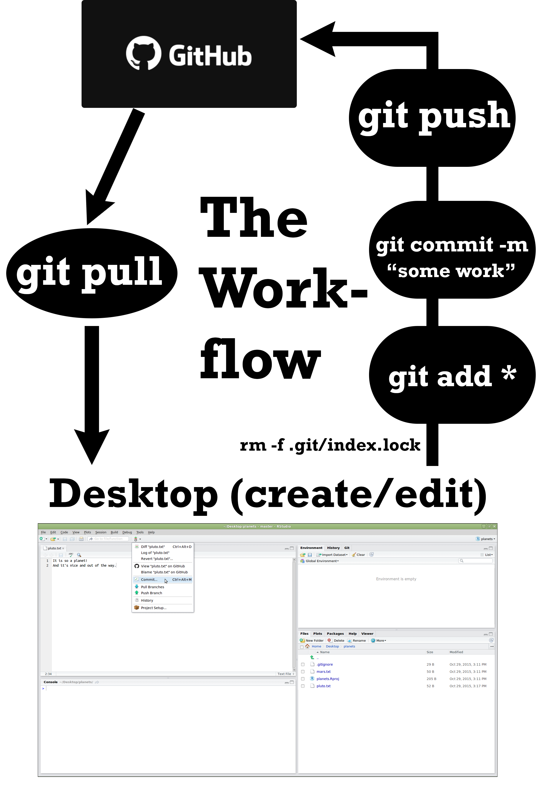
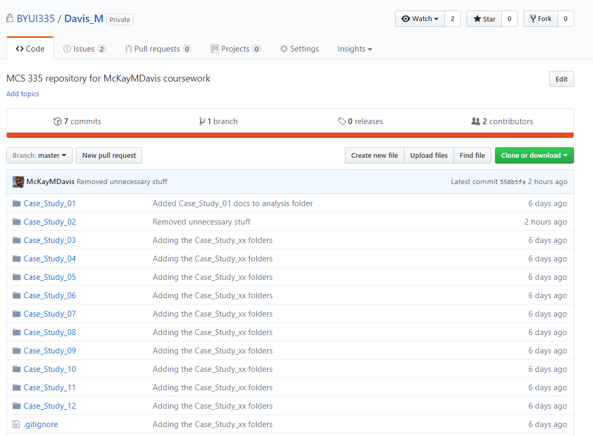
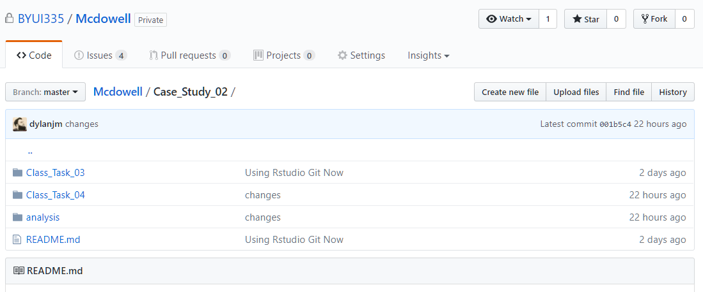

Version control systems (VCS) allow developers to maintain a record of how their code has changed over time. When used properly, a VCS can help a developer track down the exact point in time when a bug was introduced or fixed, easily undo changes, and collaborate with other developers.
There are many types of version control systems. Some of the more popular ones include CVS, subversion, mercurial, and git. In recent years, git has quickly become the most popular of the group.1
Git stores files in a type of database called a repository or repo. Most data science teams that work with git keep a central repository on a server somewhere that everyone on the team can access. This repository stores the files and the history of every change made to each file, including who made the changes and when those changes were made.
Git works with groups of changes called commits. A single commit might have many changes associated with it. Those changes might include updates to, existing files, the addition of new files, or the removal of files.
Imagine a developer named Sally who has started a new job for US Robotics. She’s told that her first assignment is to fix a bug in the positronic brain code that is causing all of the robots to walk around in circles. She takes the following steps:
git clone https://github.com/us-robotics/brain.gitgit add PositronicBrain.javagit commit -m "Fixed the bug that made robots attack ice cream shops."git pullgit pushMost of your interactions with a git repository will follow the same six steps that Sally followed. Note the sequence of the pull and push commands.
This is critical when working with git: Always pull before you push.
As we are getting introduced to git and GitHub, you will be the only one that is working with your repository. This will make the git pull less used in our day-to-day workflow. We will only need to get the workflow for adding files from our local repository to the GitHub central repository.
After you have linked your GitHub repo with your local computer, then the commands on the right side of the below image are the ones that will be used each time you move files to GitHub. Note the command rm -f .git/index.lock. At times this will need to be used when you get an error from Git that your files are locked. After running the previous command, we can then move through the process as usual2.
This video provides a succinct overview of the use of Git with the R-Studio graphical user interface (GUI).

After syncing your local computer with your class repository that we created for you, please download this zipfile and then move the folder structure into your local repository (folder). After you have moved the folders and pushed to your GitHub repository, your repo should match the folder structure in the following two images.


{kind=link}